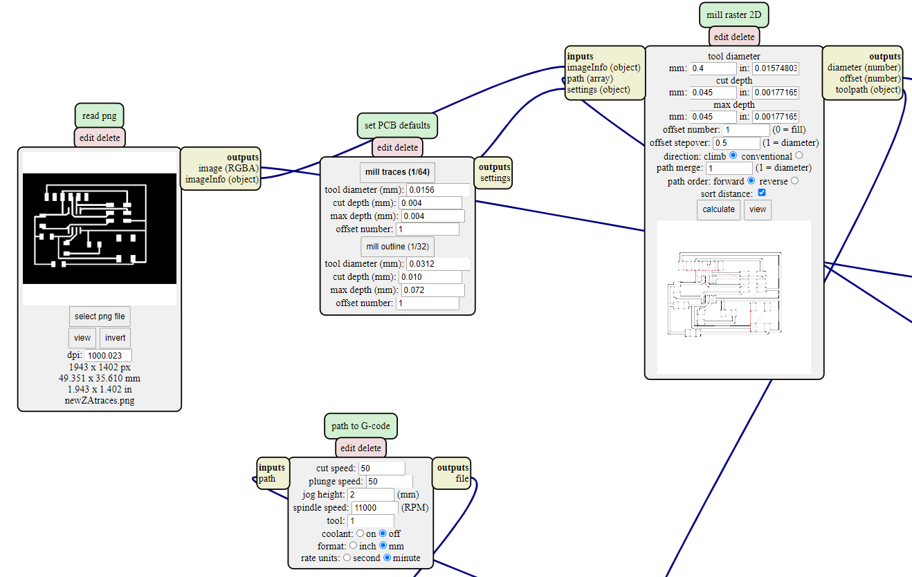
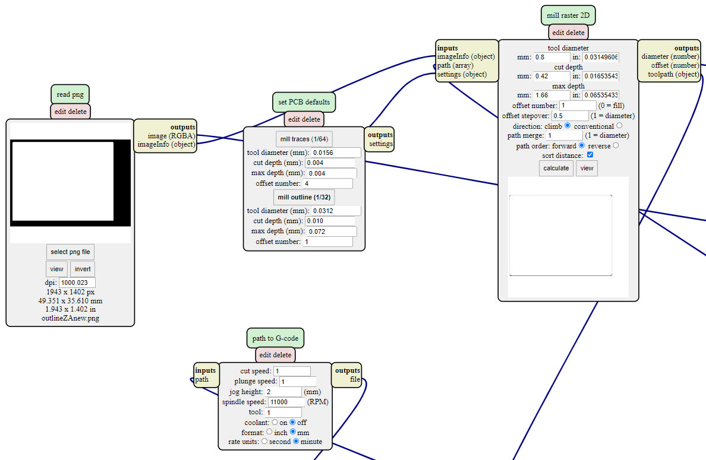
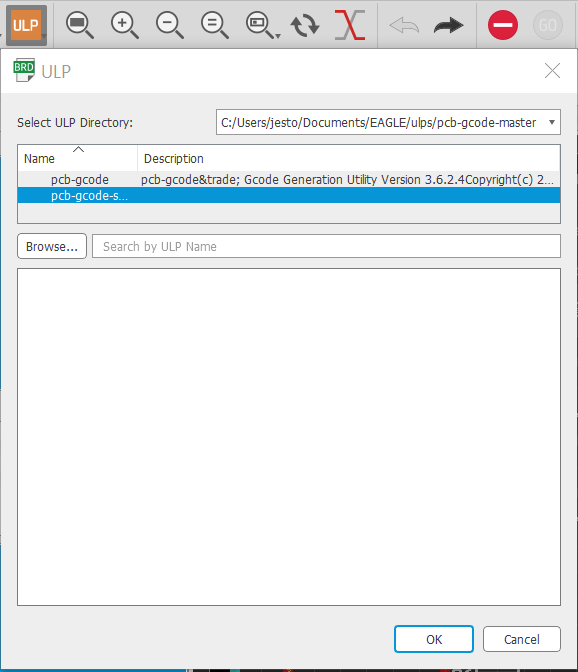
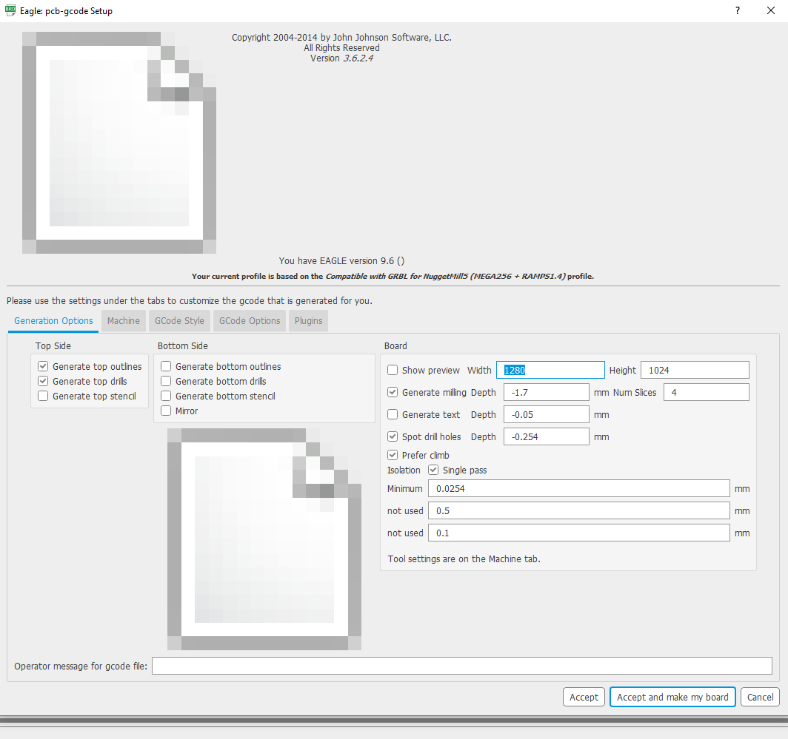
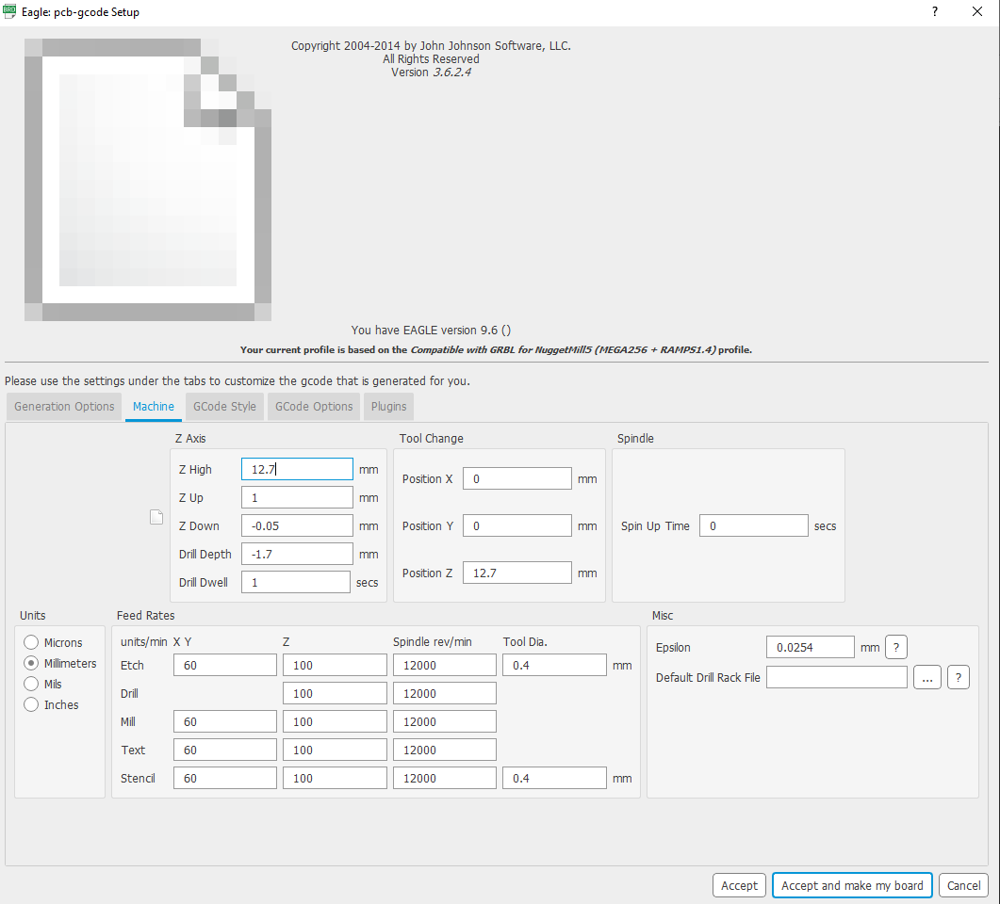
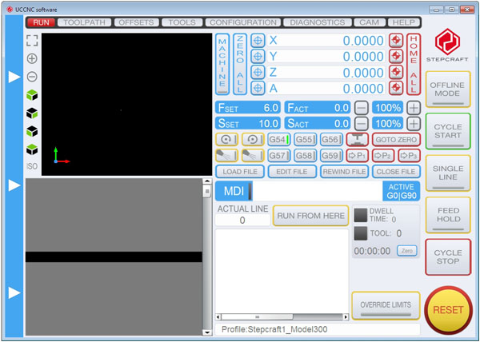
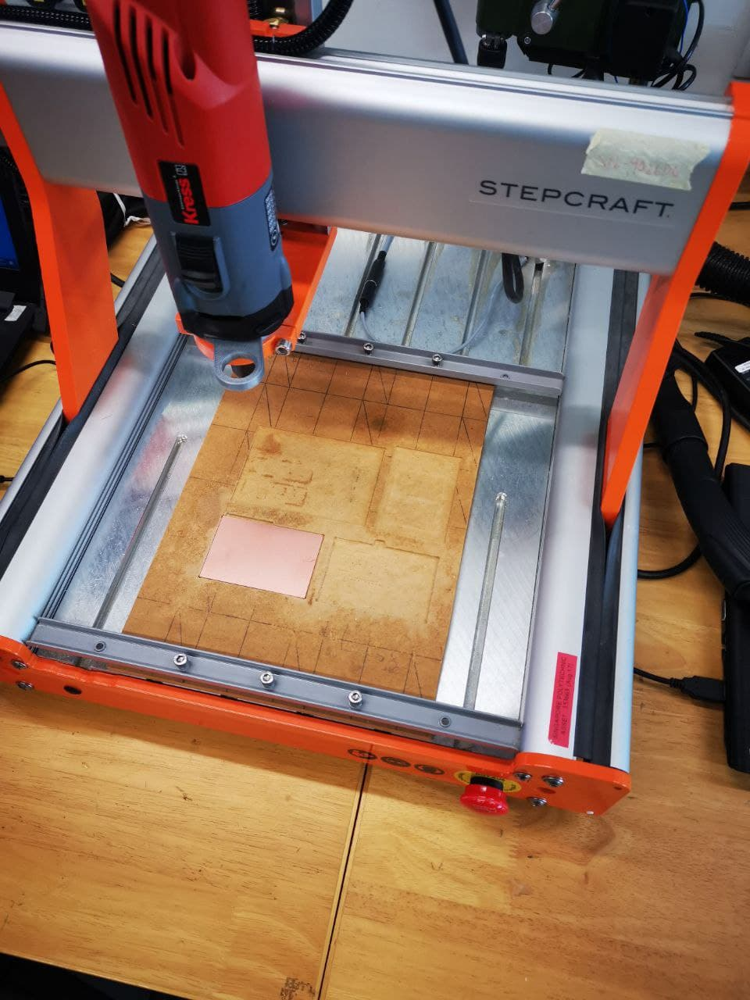
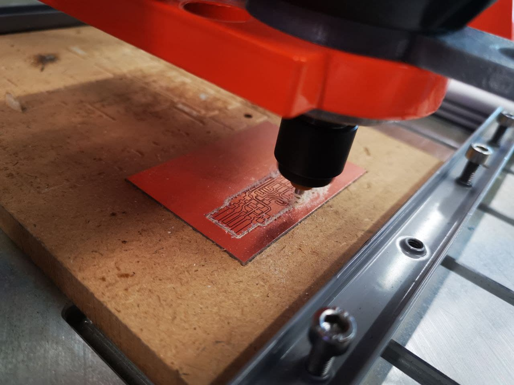
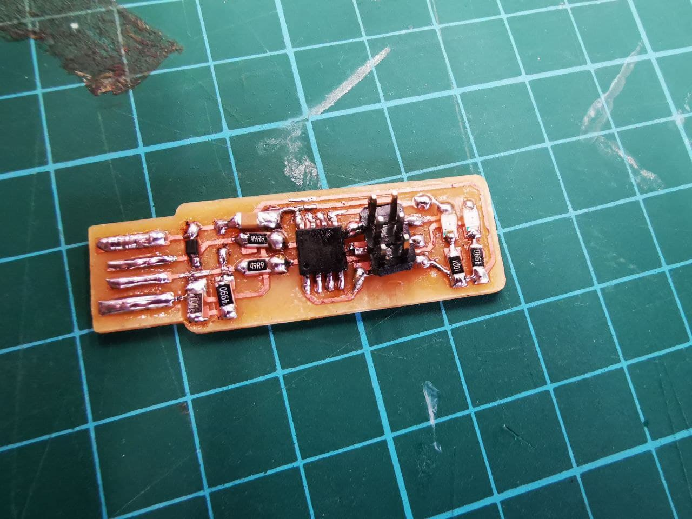
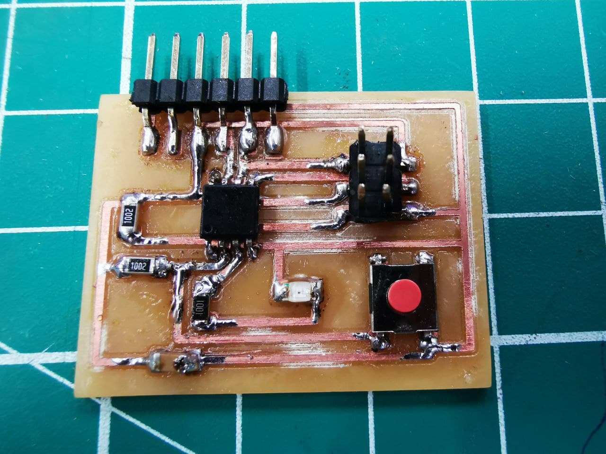

Electronics Production
Turning the board design into G.code files
Method 1 (using Mods)
To use mods to generate the G.code files, we have to save our designs made into Monochrome image(PNG) which are the trace and outline. Under "Layers settings", hide the components for your trace/outline so that either one of the trace/outline is visible, click on file > export > image, check the "monochrome" box and ensure resolution is 1000 DPI, click "ok" to save your trace/outline files into monochrome images.
With your traces & Outline images(PNG) ready, click on this hyperlink Mods to format and convert your images to g.code files.
On the page, right click and select program > open server program > G-code - mil 2D PCB png. Insert your trace/outline image by clicking "select png file". You can follow the recommended settings to make your trace/outline files. Once done, click "calculate" and your G.code file will be generated.
Settings for Traces
Select "mil traces (1/64)". I also changed the offset number to "1", thus the CNC cutter will only do 1 pass of cutting, this is due to personal preferance as i believe it will do a nicer cut.
Settings for Outline
Select "mil outline (1/32)".
Method 2 (Using Eagle Software)
With the files we've downloaded into Eagles, we can use it to generate our G.code files directly. Firstly, on the tab menu, click on "Run ULP", select the second option "pcb-gcode-setup" and click "ok". Follow the settings for "Generation Options" and "Machine" down below, select "Accept and make my board" and you will generate your g.code files. You can find your files by going to Documents > EAGLE > projects(go to your project folder) and find the the g.code files for etch(traces) and mill(outline).
  Cutting the circuit Board
The UCCNC software operates the STEPCRAFT CNC cutting machine. This machine is programmed to cut your PCB with the instructions from your g.code files, the X-axis allows movement “left” and “right”, Y-axis allows movement “forward” and “backward”, Z-axis allows movement “up” and “down”.
Things to take note when using the CNC cutting machine:
- Ensure machine is working and your PCB is placed firmly to prevent it from moving which may affect the cutting.
- Click on Toolpath > load files and select your traces/outline files. You should cut your board traces first.
- Test to ensure that the probe is working, and set the value of Z first, followed by X/Y values.
- Once eveything is set up, turn on your drill and press "cycle start" to start the cutting process.
- To stop the cutting process, click "cycle stop".
- Press the emergency Red button located on the machine in case of an emergency.
 
Picture below shows a ISP(In-system programming) programmer, this programmer allows embedded devices such as microcontrollers to be programmed while installed in a complete system, rather than needing the chip to be programmed prior to installation into the system.
And here is my finished Attiny85 PCB. ISP work with Attiny85 to programme the microcontroller.
